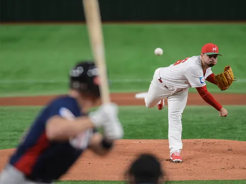

야구 (Baseball)
야구(Baseball)는 각각 9명 또는 10명으로 구성된 두 팀이 방망이와 공을 사용해 정해진 규격의 경기장에서 승패를 겨루는 대표적인 구기 종목입니다. 두 팀이 공격과 수비를 번갈아 하며, 공격 팀의 타자가 수비 팀 투수가 던진 공을 쳐서 경기장 안의 4개 베이스(누)를 차례로 밟고 홈으로 돌아와 득점을 올리는 방식으로 진행됩니다.
1. 개요 및 정의
야구는 펜스 안의 다이아몬드 형태 내야와 넓은 외야로 이루어진 필드에서 치러집니다. 다른 구기 종목과 달리 '시간 제한이 없다'는 고유의 특징을 가지며, 아웃 카운트라는 기회의 단위를 공평하게 나누어 가집니다. 또한 공이 아니라 '사람(주자)이 점수판에 들어와야 득점'이 인정되는 독특한 매커니즘을 가지고 있습니다.
2. 야구의 역사
2.1. 세계 야구의 기원
야구의 기원에 대해서는 영국에서 행해지던 크리켓(Cricket)이나 라운더스(Rounders)라는 전통 민속 오락식 게임이 북미 대륙으로 넘어가 발전했다는 설이 가장 유력합니다. 1845년 미국의 알렉산더 카트라이트가 속한 '새커보커 클럽'이 다이아몬드형 경기장, 9인제 경기, 3아웃 교대 등 현대 야구의 뼈대가 되는 새커보커 규칙(Knickerbocker Rules)을 성문화하면서 현대 스포츠의 형태를 갖추게 되었습니다.
2.2. 한국 야구의 역사
대한민국에는 구한말인 1904년, 미국인 선교사 필립 질레트(Philip L. Gillett)가 황성기독교청년회(YMCA) 회원들에게 전파한 것이 시초입니다. 당시에는 '타구(打球)' 또는 '격구' 등으로 불리다 야구라는 명칭으로 정착했습니다. 이후 고교야구를 거쳐 1982년 프로야구(KBO 리그)가 출범하면서 국민적인 인기를 누리는 스포츠로 성장했습니다.
3. 기본 경기 규칙 및 룰
3.1. 이닝(Inning) 제도
정식 야구 경기는 총 9이닝(회)으로 구성됩니다. 각 이닝은 초(Top)와 말(Bottom)로 나뉘며, 원정팀이 먼저 공격(초)을 하고 홈팀이 나중에 공격(말)을 진행합니다. 9회 말까지 끝났을 때 점수가 높은 팀이 승리하며, 동점일 경우에는 대회 규정에 따라 연장전(KBO는 최대 12회 또는 15회)을 치릅니다.
3.2. 볼카운트: 스트라이크와 볼
투수와 타자의 대결은 4심 합의하에 설정된 '스트라이크 존'을 기준으로 이루어집니다.
스트라이크(Strike): 투수가 던진 공이 스트라이크 존을 통과하거나, 타자가 헛스윙을 하거나, 2스트라이크 이전에 파울을 쳤을 때 선언됩니다. 3스트라이크가 되면 삼진 아웃이 됩니다.
볼(Ball): 던진 공이 스트라이크 존을 벗어나고 타자가 배트를 휘둘러 반응하지 않은 경우입니다. 4볼(볼넷)이 쌓이면 타자는 타격을 하지 않고도 안전하게 1루로 출루(Base on Balls)합니다.
3.3. 아웃(Out)의 종류
수비 팀은 한 이닝에 타자 및 주자 3명을 아웃시켜야 공격권을 가져올 수 있습니다.
탈삼진 (Strikeout): 스트라이크 3개를 연속으로 획득하여 타자를 즉시 제외하는 형태입니다.
플라이 아웃 (Flyout): 타자가 친 타구가 땅에 떨어지기 전에 수비수가 다이렉트로 포구했을 때 적용됩니다.
땅볼 아웃 (Groundout): 타구를 땅에 굴린 후, 수비수가 공을 잡아 타자가 1루에 도달하기 전 베이스를 밟거나 송구해 아웃시키는 형태입니다.
4. 수비 포시전 및 역할
야구의 수비수는 저마다 고유의 등번호 형태인 '포지션 번호(1~9번)'를 가집니다.
| 번호 | 포지션명 | 주요 역할 |
|---|---|---|
| 1 | 투수 (Pitcher) | 중심에서 공을 던져 타자를 상대하고 경기를 조율하는 포지션 |
| 2 | 포수 (Catcher) | 투수의 공을 받으며 경기장 전체의 수비를 지휘하는 야전사령관 |
| 3 | 1루수 (First Baseman) | 내야 송구를 가장 많이 잡아내야 하므로 포구 능력이 중시되는 자리 |
| 4 | 2루수 (Second Baseman) | 유격수와 함께 센터라인을 담당하며 기민한 수비 능력이 요구됨 |
| 5 | 3루수 (Third Baseman) | 강한 타구가 많이 와서 '핫 코너'라 불리며, 강한 어깨가 필수적 |
| 6 | 유격수 (Shortstop) | 내야 수비의 핵심이자 가장 넓은 수비 범위를 자랑하는 포지션 |
| 7 | 좌익수 (Left Fielder) | 외야 왼쪽 구역을 방어하며 단단한 수비와 타격력이 동반됨 |
| 8 | 중견수 (Center Fielder) | 외야의 리더로 엄청난 주력과 수비 범위가 강제되는 포지션 |
| 9 | 우익수 (Right Fielder) | 3루까지 송구해야 하므로 외야수 중 가장 강하고 정확한 송구력 장착 |
5. 주요 야구 전문 용어
💡 탭하여 펼치기: 필수 야구 용어 사전
• 안타 (Hit): 타자가 공을 쳐서 수비 실책 없이 안전하게 루상으로 출루하는 것에 성공한 타구입니다.
• 도루 (Stolen Base): 루상에 있던 주자가 투수의 투구 동작을 간파하고 틈을 타 다음 베이스로 진루하는 기술입니다.
• 병살타 (Double Play): 타자의 한 번의 타격으로 인해 연속해서 두 명의 공격수(주자와 타자)가 동시에 아웃되는 최악의 결과입니다.
• 지명타자 (Designated Hitter; DH): 수비는 하지 않고 오직 투수 대신 타석에만 들어서는 타격 전문 포지션입니다.
6. 대한민국 프로야구 (KBO 리그)
대한민국의 프로 야구는 1982년 세계 6번째 프로야구 리그로 출범했으며, 현재 총 10개 구단체제로 운영되고 있습니다. 정규시즌 팀당 144경기를 치르며, 시즌이 끝난 후 상위 5개 팀이 가을야구라 불리는 '포스트시즌(와일드카드 결정전 - 준플레이오프 - 플레이오프 - 한국시리즈)'에 진출하여 최종 챔피언을 가립니다.

| 종류 | 구기 경기 (단체 스포츠) |
|---|---|
| 경기 인원 | 팀당 9명 (지명타자제 적용 시 10명) |
| 최초 창립 | 1845년 (미국 뉴욕 규칙 기준) |
| 한국 도입 | 1904년 (YMCA 필립 질레트) |
| 주요 기구 | WBSC (세계 연맹) KBO (한국 야구 위원회) |
| 3대 리그 | MLB (미국) / KBO (한국) / NPB (일본) |
| 경기 구성 | 정규 9이닝 (시간 제한 없음) |